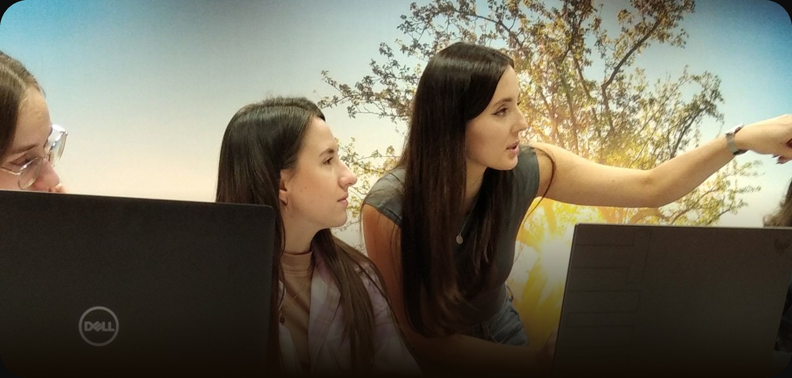
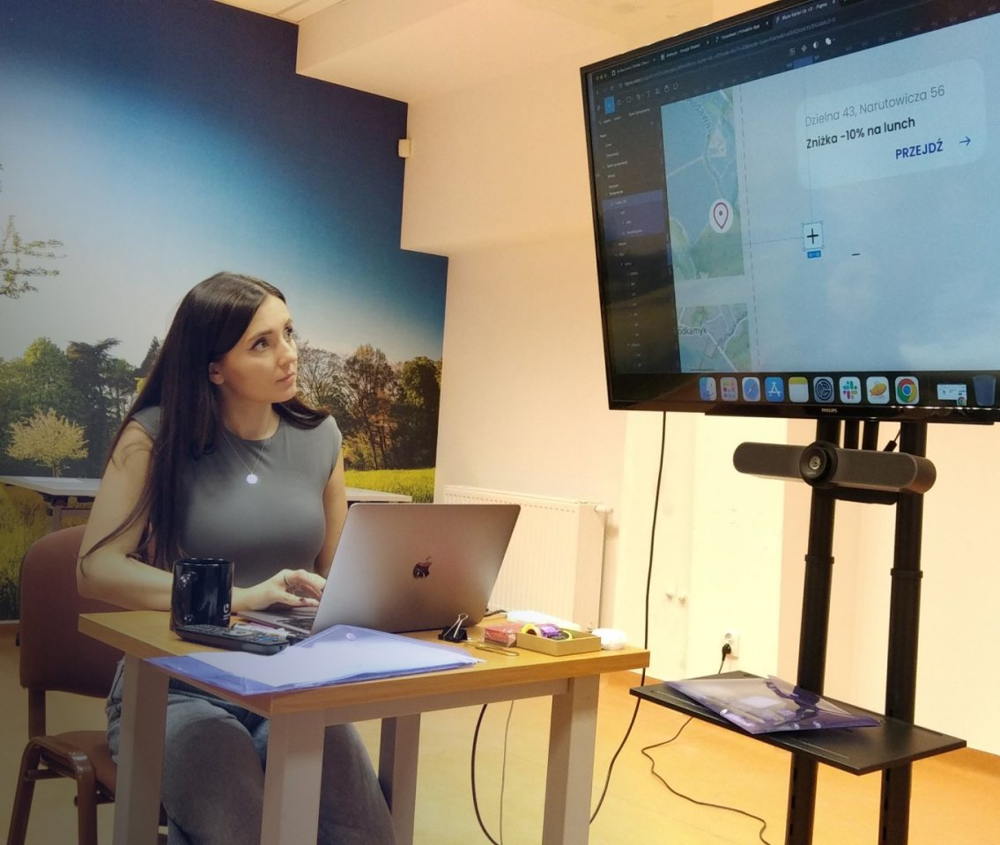
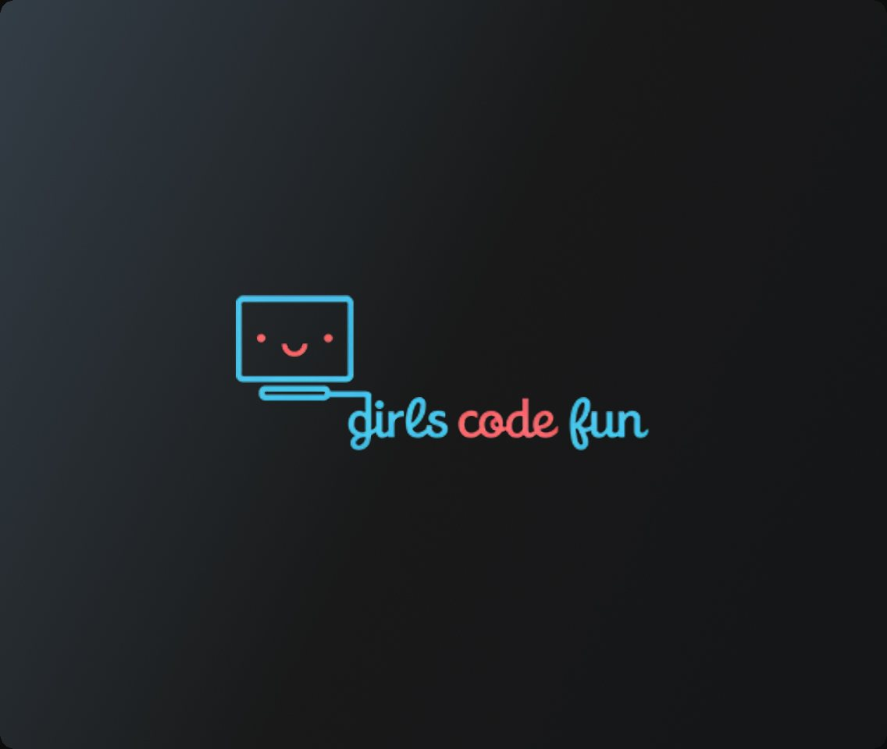
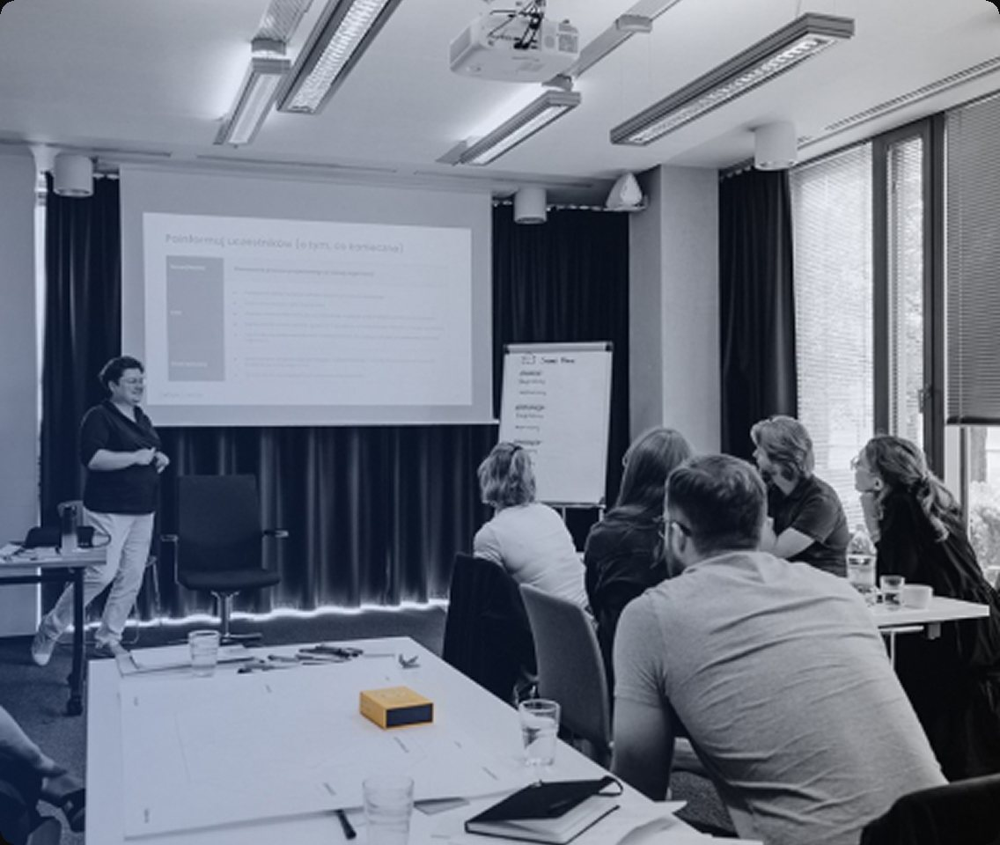

Doświadczenie
Decyzje produktowe, współpraca z biznesem oraz koordynacja pracy zespołu kreatywnego

Kariera
Doświadczenie
Samozatrudnienie od 2014
Goodylabs 2021 - obecnie
Realizowałam projekty aplikacji mobilnych i webowych, odpowiadając za projektowanie doświadczeń użytkowników oraz rozwój produktów cyfrowych. W Goodylabs współtworzyłam aplikację CSR wyróżnioną w konkursie Mobile Trends Awards, a także zdobywałam pierwsze doświadczenia w obszarze prowadzenia zespołu kreatywnego.
- UX Team Lead 06.2024 – obecnie
- Senior UX Designer 05.2023 – 05.2024
- UX Designer 04.2021 – 05.2023
Unit4 2017 – 2021
Rozwijałam swoje umiejętności pracując przy dużym systemie ERP oraz Student Management System – platformie do zarządzania danymi i finansami studentów.
- Regular UX Designer 03.2018 – 03.2021
- Associate UX Designer 03.2017 – 03.2018
- UX Designer Intern 08.2016 – 03.2017
Jojo Mobile Polska 08.2015 - 09.2015
Moje pierwsze komercyjne doświadczenie w obszarze UX/UI. Moim zadaniem było stworzenie strony internetowej firmy Jojo Mobile Polska, odpowiadałam za koncepcję i wdrożenie strony w narzędziu WordPress.
- Website Designer 08.2015 – 09.2015
Wykształcenie
Edukacja
-
Uniwersytet Ekonomiczny we Wrocławiu
Informatyka w biznesie
Studia magisterskie (2014 – 2016)
-
Uniwersytet Łódzki
Zarządzanie
Studia licencjackie (2011 – 2014)
Warsztaty i szkolenia
Rozwój i nauka
-

Akademia pozytywnego lidera
Cykl spotkań ukierunkowany na rozwój kompetencji menedżerskich oraz poszerzanie wiedzy z zakresu zarządzania zespołem i ludźmi.
-

Program mentorski
Celem programu mentoringowego było pokazanie młodym uczennicom możliwych ścieżek rozwoju kariery w obszarze mojej specjalizacji zawodowej.
-

Planowanie i facylitacja warsztatów
Szkolenie prowadzone przez Igę Mościchowską
- Wszystkie szkolenia